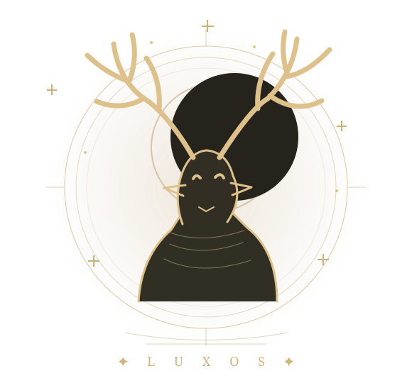

OS REGISTOS PERDIDOS DE HORXS
Há mundos que
vivem nas lendas.
Das florestas esquecidas aos céus mais distantes, descobre as criaturas que habitam os reinos de Luxos.
Abrir o bestiário ARQUIVO NATURAL · VOL. I

—CRIATURAS REGISTADAS
—REINOS EXPLORADOS
—TIPOS DE ALIMENTAÇÃO
CAPÍTULO PRIMEIRO ✧ A VIDA DE LUXOS
O Grande Bestiário
Folheia os registos. Cada criatura guarda uma história à espera de ser descoberta.
CAPÍTULO SEGUNDO ✧ ESCALAS & MEDIDAS
Gigantes ou minúsculos?
Escolhe duas criaturas e compara as suas alturas à mesma escala, com uma pessoa de 1,70 m como referência.
VS
As barras representam a altura registada, não o comprimento nem a silhueta exata dos animais.
UMA ENCICLOPÉDIA VIVA
As páginas nunca se fecham.
Luxos é o arquivo de criaturas do RPG Horxs. À medida que novas espécies são descobertas pelo guardião, os seus registos passam a integrar este livro e ficam disponíveis para todos os viajantes.